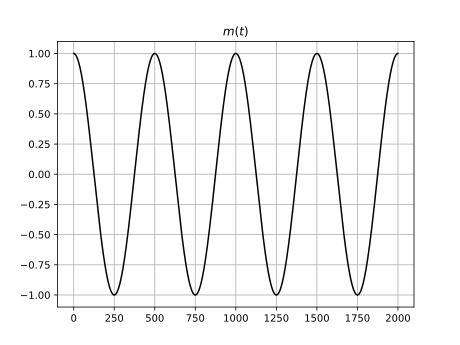
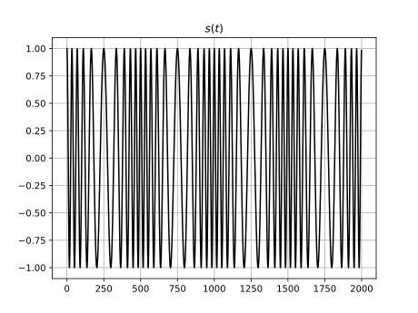
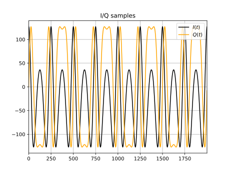
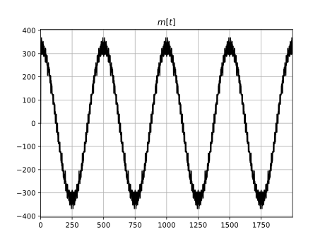

FM demodulation from I/Q samples
Frequency modulation
Instantaneous phase
The instantaneous phase of a function $s:\mathbb{R}\mapsto\mathbb{Q}$ is defined as
\[\begin{equation} \theta(t)=\arg\left\{s(t)\right\}, \end{equation}\]where $\arg$ is the complex argument function. For a function $s:\mathbb{R}\mapsto\mathbb{R}$, the instantaneous phase is determined using the function's analytic presentation $s_a(t)$ with
\[\begin{equation} \theta(t)=\arg\left\{s_a(t)\right\}=\arg\left\{s(t)+j\hat{s}(t)\right\}, \end{equation}\]where $\hat{s}(t)$ is the Hilbert transform of $s(t)$. The instantaneous frequency is obtained by taking the time derivative of the instantaneous phase
\[\begin{equation} \label{eq:3} \omega(t)=\dfrac{d\theta(t)}{dt}. \end{equation}\]Modulating baseband message $m(t)$
Given a baseband message $m(t)$ with carrier frequency $\omega_c$, the instantaneous frequency is defined as
\[\begin{equation} \omega(t)=\omega_c+k_\omega m(t), \end{equation}\]where $k_\omega>0$ is the frequency sensitivity. The instantaneous phase $\theta(t)$ can be obtained by integrating $\omega(t)$ over $\left[0, t\right]$, giving
\[\begin{equation} \begin{split} \theta(t)&=\int_0^t\omega(\tau)d\tau\\ &=\omega_ct+k_\omega\int_0^tm(t)d\tau\\ &=\omega_ct+k_\omega\theta_m(t). \end{split} \end{equation}\]Given the instantaneous phase, the FM signal for baseband message $m(t)$ is defined as
\[\begin{equation} s(t)=A\cos{\left[\theta(t)\right]}=A\cos{\left[\omega_ct+k_\omega\theta_m(t)\right]}, \end{equation}\]where $A$ is the amplitude of the signal.
I/Q samples
I/Q samples refer to in-phase and quadrature representation of the signal. For FM signal, the in-phase $I(t)$ and quadrature $Q(t)$ components can be extracted from $s(t)$ using angle sum identity
\[\begin{equation} \begin{split} s(t)&=A\cos{\left[\omega_ct+k_\omega\theta_m(t)\right]}\\ &=A\cos{\left(\omega_ct\right)}\cos{\left[k_\omega\theta_m(t)\right]}-A\sin{\left(\omega_ct\right)}\sin{\left[k_\omega\theta_m(t)\right]}\\ &=A\cos{\left(\omega_ct\right)}I(t)-A\sin{\left(\omega_ct\right)}Q(t). \end{split} \end{equation}\]I/Q samples are often processed as complex numbers $I(t)+jQ(t)$.
FM demodulation
In order to extract $m(t)$ from the FM signal, we first need to recover $\theta_m(t)$. Given $I(t)$ and $Q(t)$, we can do this by using arctangent
\[\begin{equation} \begin{split} \tan^{-1}{\left[\frac{Q(t)}{I(t)}\right]}&=\tan^{-1}{\left[\frac{\cos{\left[k_\omega\theta_m(t)\right]}}{\sin{\left[k_\omega\theta_m(t)\right]}}\right]}\\ &=\tan^{-1}{\left\{\tan\left[k_\omega\theta_m(t)\right]\right\}}\\ &=k_\omega\theta_m(t). \end{split} \end{equation}\]Finally, using equation $\ref{eq:3}$ we obtain
\[\begin{equation} m(t)=\dfrac{d\theta_m(t)}{dt}=\frac{1}{k_\omega}\dfrac{d}{dt}\tan^{-1}{\left[\frac{Q(t)}{I(t)}\right]}. \end{equation}\]When demodulating the FM signal in software, it is useful to treat the I/Q samples as complex values $x\left[t\right]=I\left[t\right]+jQ\left[t\right]$ and approximate the derivative using
\[\begin{equation} m\left[t\right]\approx\tan^{-1}{\left(\frac{\Im\left\{x\left[t-1\right]\cdot x\left[t\right]\right\}}{\Re\left\{x\left[t-1\right]\cdot x\left[t\right]\right\}}\right)}, \end{equation}\]
where $\Im\left\{z\right\}$ and $\Re\left\{z\right\}$ are the imaginary and real part of $z$ respectively.
Example
Let $f_c=1~\mathrm{kHz}$, $f_c=100~\mathrm{Hz}$, $f_c=50~\mathrm{kHz}$, $k_\omega=500~\mathrm{Hz}$, and
\[\begin{equation}
\begin{split}
&m(t)=\cos{\left(\omega_mt\right)}\\
\Rightarrow &s(t)=\cos\left(\omega_ct+\frac{k_\omega}{\omega_m}\sin\omega_mt\right).
\end{split}
\end{equation}\]
   